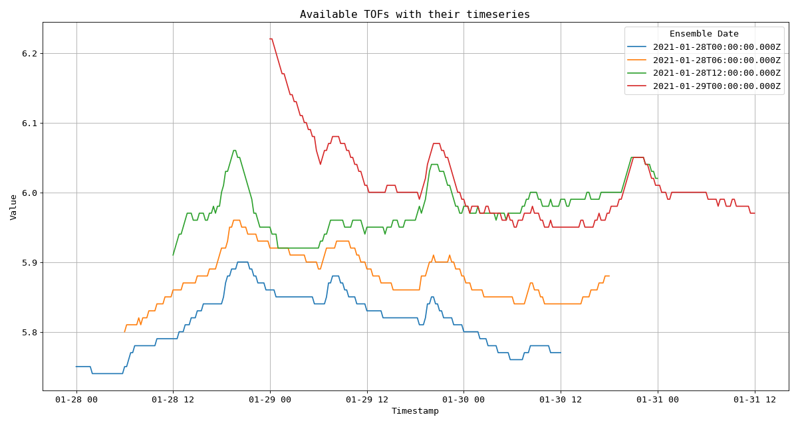
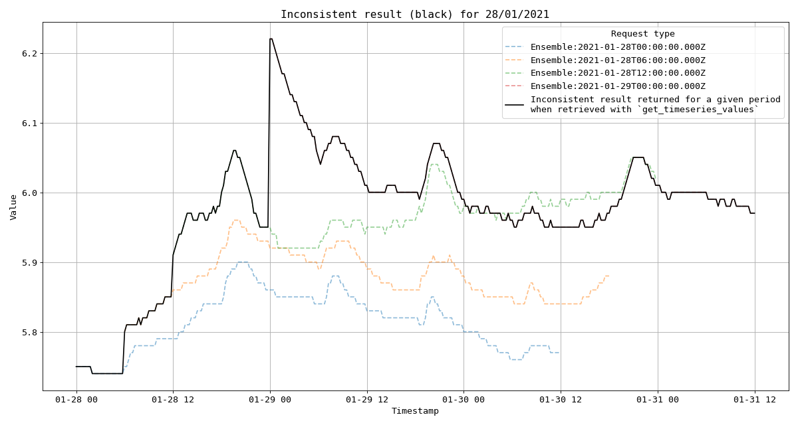

Tutorial
The Waterinfo module facilitates access to waterinfo.be, a website managed by the Flanders Environment Agency (VMM) and Flanders Hydraulics Research (HIC). The website provides access to real-time water and weather related environmental variables for Flanders (Belgium), such as rainfall, air pressure, discharge, and water level. The package provides functions to search for stations and variables, and download time series.
The API is a product of Kisters and is called KIWIS. Hence, the code would work on other deployments of this API as well. As VMM and HIC have each another deployment of the API, the documentation could be slightly different for VMM versus HIC.
Introduction
The waterinfo.be API uses a system of identifiers, called ts_id to define individual time series.
For example, the identifier ts_id = 78073042 corresponds to the time series of air pressure data
for the measurement station in Liedekerke, with a 15 min time resolution. Hence, the ts_id identifier
defines a variable of interest from a measurement station of interest with a specific frequency
(e.g. 15 min, hourly,…). The knowledge of the proper identifier is essential to be able to download
the corresponding data.
In order to get started, make sure to define the source of the data: VMM or HIC:
from pywaterinfo import Waterinfo
vmm = Waterinfo("vmm") # look for data from VMM
hic = Waterinfo("hic") # look for data from HIC
One of the reasons is that tokens are provided by them separately. If you have a token available, add this to the initiation to make sure all session requests are using the token:
from pywaterinfo import Waterinfo
vmm_token = "DUMMY"
vmm = Waterinfo("vmm", token=vmm_token)
Download with known ts identifier
In case you already know the ts_id identifier that defines your time series, the class Waterinfo provides the method
get_timeseries_values() to download a specific period of the time series. For example, to download the air pressure time series data of Liedekerke with a 15 min resolution
(ts_id = 78073042) for the first of January 2016:
from pywaterinfo import Waterinfo
vmm = Waterinfo("vmm")
vmm.get_timeseries_values("78073042", start="2016-01-01", end="2016-01-02")
Mostly, you do not know these identifiers. Hence, to search for the required identifiers, different methods are provided to support this, as described in the following sections.
The datetime inputs (start and end) are assumed to be ‘UTC’ by
default. To request data in another (supported) time zone (e.g. CET, GMT,
Etc/GMT+1,…), add the timezone parameter, e.g. timezone='CET'.
Warning
This behavior is different to the KIWIS API itself, which interprets the incoming
date format always as CET. Hence, requesting data to the REST API directly
from ‘2019-05-01 14:00:00’ with timezone ‘UTC’ will return data starting
from ‘2019-05-01 12:00:00+00’ (UTC). In the pywaterinfo package, the
start and end parameters are assumed in the timezone of the request
parameter timezone (unless the start and end already contain
time zone info).
Apart from the start and end configuration, the usage of the period is a convenient
way of requesting time series. See the get_timeseries_values() for
more information and examples.
When interested in all available data of a time series (! watch out with credit limits) or using the start/end of the time series in the request, one can find these in the metadata of a time series as illustrated in the following example:
from pywaterinfo import Waterinfo
hic = Waterinfo("hic")
# Request the start/end of the time series
station_metadata = hic.get_timeseries_list(ts_id = 51814010)
start, end = station_metadata[["from", "to"]].values[0]
# Get data from start of time series up to next two days
df = hic.get_timeseries_values(51814010, start=start, period="P2D")
Note
If you want ‘naive’ timestamps in the returned time series, use the tz_localize
function of Pandas, e.g. df["Timestamp"] = df["Timestamp"].dt.tz_localize(None).
Ensemble time series - only available for HIC
Ensemble data, in contrast to CMD time series values, contains different Time of
Forecast (TOF) data for a given period followed by all the forecasted timestamps with
their values. For instance, for ts_id= 84021010, the following TOFs
can be retrieved between start=2021-01-28 and end=2021-01-29.
from pywaterinfo import Waterinfo
hic = Waterinfo("hic")
# Get the all the available ensembles between two dates
df_ensemble_data = hic.get_ensemble_timeseries_values(
ts_id=84021010,
start="2021-01-28",
end="2021-01-29",
)
(Source code, png, hires.png, pdf)
{kind=link}
{kind=link}

Example of 1 (one!) timeseries, containing 5 different TOF for 28/01/2021
# Show available columns
print(f"Available columns: {df_ensemble_data.columns}")
print("Retrieved TOFS:")
grouped = df_ensemble_data.groupby("ensembledate")
for name, group in grouped:
print(f"Ensemble date: {name}")
# Show the first few rows of each ensemble group
print(group.head(), end="\n\n")
Available columns : [
'Timestamp', '0', 'ts_id', 'ts_path', 'station_id', 'station_no',
'station_name', 'parametertype_name', 'ts_name', 'ts_unitsymbol',
'ensembledate', 'ensembledispatchinfo'
]
Retrieved TOFS:
Ensemble date: 2021-01-28T06:00:00.000Z
Timestamp 0 ts_id ts_path station_id ... parametertype_name ts_name ts_unitsymbol ensembledate ensembledispatchinfo
0 2021-01-28 06:00:00+00:00 20.75 84021010 Aarschot/dem02a-1066/Q_voorspeld/Cmd.Ensemble.... 21965 ... Q_voorspeld KT-det.O m³/s 2021-01-28T06:00:00.000Z MR1
1 2021-01-28 06:15:00+00:00 20.78 84021010 Aarschot/dem02a-1066/Q_voorspeld/Cmd.Ensemble.... 21965 ... Q_voorspeld KT-det.O m³/s 2021-01-28T06:00:00.000Z MR1
2 2021-01-28 06:30:00+00:00 20.79 84021010 Aarschot/dem02a-1066/Q_voorspeld/Cmd.Ensemble.... 21965 ... Q_voorspeld KT-det.O m³/s 2021-01-28T06:00:00.000Z MR1
3 2021-01-28 06:45:00+00:00 20.80 84021010 Aarschot/dem02a-1066/Q_voorspeld/Cmd.Ensemble.... 21965 ... Q_voorspeld KT-det.O m³/s 2021-01-28T06:00:00.000Z MR1
4 2021-01-28 07:00:00+00:00 20.81 84021010 Aarschot/dem02a-1066/Q_voorspeld/Cmd.Ensemble.... 21965 ... Q_voorspeld KT-det.O m³/s 2021-01-28T06:00:00.000Z MR1
[5 rows x 12 columns]
Ensemble date: 2021-01-28T12:00:00.000Z
Timestamp 0 ts_id ts_path station_id ... parametertype_name ts_name ts_unitsymbol ensembledate ensembledispatchinfo
0 2021-01-28 12:00:00+00:00 22.98 84021010 Aarschot/dem02a-1066/Q_voorspeld/Cmd.Ensemble.... 21965 ... Q_voorspeld KT-det.O m³/s 2021-01-28T12:00:00.000Z MR1
1 2021-01-28 12:15:00+00:00 23.19 84021010 Aarschot/dem02a-1066/Q_voorspeld/Cmd.Ensemble.... 21965 ... Q_voorspeld KT-det.O m³/s 2021-01-28T12:00:00.000Z MR1
2 2021-01-28 12:30:00+00:00 23.42 84021010 Aarschot/dem02a-1066/Q_voorspeld/Cmd.Ensemble.... 21965 ... Q_voorspeld KT-det.O m³/s 2021-01-28T12:00:00.000Z MR1
3 2021-01-28 12:45:00+00:00 23.67 84021010 Aarschot/dem02a-1066/Q_voorspeld/Cmd.Ensemble.... 21965 ... Q_voorspeld KT-det.O m³/s 2021-01-28T12:00:00.000Z MR1
4 2021-01-28 13:00:00+00:00 23.93 84021010 Aarschot/dem02a-1066/Q_voorspeld/Cmd.Ensemble.... 21965 ... Q_voorspeld KT-det.O m³/s 2021-01-28T12:00:00.000Z MR1
[5 rows x 12 columns]
Ensemble date: 2021-01-28T18:00:00.000Z
Timestamp 0 ts_id ts_path station_id ... parametertype_name ts_name ts_unitsymbol ensembledate ensembledispatchinfo
0 2021-01-28 18:00:00+00:00 30.95 84021010 Aarschot/dem02a-1066/Q_voorspeld/Cmd.Ensemble.... 21965 ... Q_voorspeld KT-det.O m³/s 2021-01-28T18:00:00.000Z MR1
1 2021-01-28 18:15:00+00:00 31.45 84021010 Aarschot/dem02a-1066/Q_voorspeld/Cmd.Ensemble.... 21965 ... Q_voorspeld KT-det.O m³/s 2021-01-28T18:00:00.000Z MR1
2 2021-01-28 18:30:00+00:00 32.09 84021010 Aarschot/dem02a-1066/Q_voorspeld/Cmd.Ensemble.... 21965 ... Q_voorspeld KT-det.O m³/s 2021-01-28T18:00:00.000Z MR1
3 2021-01-28 18:45:00+00:00 32.66 84021010 Aarschot/dem02a-1066/Q_voorspeld/Cmd.Ensemble.... 21965 ... Q_voorspeld KT-det.O m³/s 2021-01-28T18:00:00.000Z MR1
4 2021-01-28 19:00:00+00:00 33.09 84021010 Aarschot/dem02a-1066/Q_voorspeld/Cmd.Ensemble.... 21965 ... Q_voorspeld KT-det.O m³/s 2021-01-28T18:00:00.000Z MR1
[5 rows x 12 columns]
Ensemble date: 2021-01-29T00:00:00.000Z
Timestamp 0 ts_id ts_path station_id ... parametertype_name ts_name ts_unitsymbol ensembledate ensembledispatchinfo
0 2021-01-29 00:00:00+00:00 38.48 84021010 Aarschot/dem02a-1066/Q_voorspeld/Cmd.Ensemble.... 21965 ... Q_voorspeld KT-det.O m³/s 2021-01-29T00:00:00.000Z MR1
1 2021-01-29 00:15:00+00:00 38.72 84021010 Aarschot/dem02a-1066/Q_voorspeld/Cmd.Ensemble.... 21965 ... Q_voorspeld KT-det.O m³/s 2021-01-29T00:00:00.000Z MR1
2 2021-01-29 00:30:00+00:00 39.44 84021010 Aarschot/dem02a-1066/Q_voorspeld/Cmd.Ensemble.... 21965 ... Q_voorspeld KT-det.O m³/s 2021-01-29T00:00:00.000Z MR1
3 2021-01-29 00:45:00+00:00 41.03 84021010 Aarschot/dem02a-1066/Q_voorspeld/Cmd.Ensemble.... 21965 ... Q_voorspeld KT-det.O m³/s 2021-01-29T00:00:00.000Z MR1
4 2021-01-29 01:00:00+00:00 41.69 84021010 Aarschot/dem02a-1066/Q_voorspeld/Cmd.Ensemble.... 21965 ... Q_voorspeld KT-det.O m³/s 2021-01-29T00:00:00.000Z MR1
[5 rows x 12 columns]
Even though, you will be able to call ensemble timeseries id’s with the
get_timeseries_values() without any error being raised, the
returned timeseries will not be consistent. Data returned will have timestamps and
values from mixed TOFs, as can be seen from the returned brown timeseries shown below.
from pywaterinfo import Waterinfo
hic = Waterinfo("hic")
# Get the all the available ensembles between two dates
df_ensemble_data = hic.get_timeseries_values(
ts_id=84021010,
start="2021-01-28",
end="2021-01-29",
)
(Source code, png, hires.png, pdf)
{kind=link}
{kind=link}

Figure showing (in black) the non-consistent result for 28/01/2021 that will be returned by HIC Webservices when treated as a Cmd time series
Time series groups
A lot of the time series and stations are bundled in so-called timeseriesgroup_id’s. They represent for example all
available station of rainfall at a given frequency (e.g. 15 Min). To get an overview of the available groups, use
the method get_group_list(), e.g. for the HIC stations:
from pywaterinfo import Waterinfo
hic = Waterinfo("hic")
hic.get_group_list()
Note
A number of these group identifiers are described in the available documentation of VMM/HIC and are the preferred option to query for the provided variables. For an overview, see the Timeseriesgroup_ids page.
Similar, for L’hydrométrie en Wallonie the group list can be requested:
from pywaterinfo import Waterinfo
spw = Waterinfo("spw")
spw.get_group_list()
Time series group data
To get all the available time series identifiers (ts_id) within a given group, use the get_timeseries_value_layer()
method. It provides the metadata of these stations and (by default) the latest measured value. The group identifier for
conductivity measured by HIC is 156173:
from pywaterinfo import Waterinfo
hic = Waterinfo("hic")
hic.get_timeseries_value_layer(timeseriesgroup_id="156173")
Multiple identifiers can be combined in a single statement:
from pywaterinfo import Waterinfo
hic = Waterinfo("hic")
# combine oxygen and conductivity in a single call
hic.get_timeseries_value_layer(timeseriesgroup_id="156207,156173")
Note
When requesting only a subset of the fields using returnfields, the resulting dataframe
still contains a lot of metadata fields added by default. To exclude these in the respond,
use the metadata parameter equal to False. For example:
water_level = vmm.get_timeseries_value_layer("192780",
returnfields="timestamp,ts_value",
metadata="false")
Search identifier based on parameter or station name
In the situation you are looking for the identifiers of all measured parameters at a station or all the
stations measuring a given parameter, use the get_timeseries_list() method.
It supports wildcards and supports looking based on station information, parameter information or a combination of both:
vmm = Waterinfo("vmm")
# for given station ME09_012, which time series are available?
vmm.get_timeseries_list(station_no="ME09_012")
# for a given parameter PET, which time series are available?
vmm.get_timeseries_list(parametertype_name="PET")
An example use case is to get the available parameters (in waterinfo also called stationparameter) at a given station? As pywaterinfo returns a Pandas DataFrame, combine pywaterinfo with the functionalities from Pandas (e.g. unique method):
vmm = Waterinfo("vmm")
# for station L11_518, which station parameters are available?
station_l11_518 = vmm.get_timeseries_list(station_no="L11_518",
returnfields="ts_id,station_name,stationparameter_longname")
station_l11_518["stationparameter_longname"].unique()
Custom queries
The VMM,
VMM Grid,
HIC and
SPW APIs
provide more API paths. Whereas no specialized functions are available, use the request_kiwis() method
to do custom calls to the KIWIS API. For example, using the getStationList query for stations starting with a P:
vmm = Waterinfo("vmm")
vmm.request_kiwis({"request": "getStationList", "station_no": "P*"})